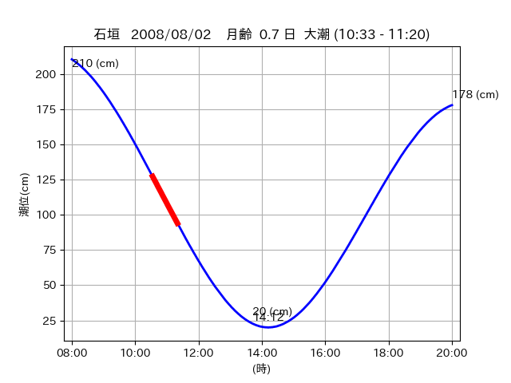
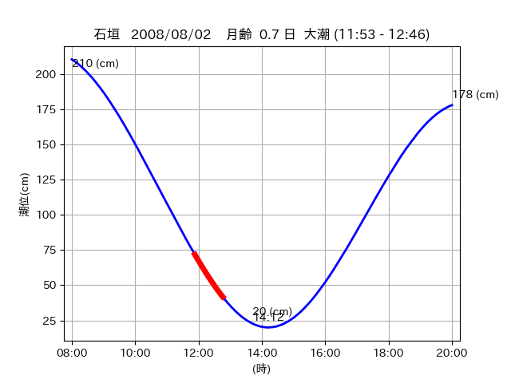

<!DOCTYPE html>
<html>
<head>
    
    <meta http-equiv="content-type" content="text/html; charset=UTF-8" />
    
        <script>
            L_NO_TOUCH = false;
            L_DISABLE_3D = false;
        </script>
    
    <style>html, body {width: 100%;height: 100%;margin: 0;padding: 0;}</style>
    <style>#map {position:absolute;top:0;bottom:0;right:0;left:0;}</style>
    <script src="https://cdn.jsdelivr.net/npm/leaflet@1.9.3/dist/leaflet.js"></script>
    <script src="https://code.jquery.com/jquery-3.7.1.min.js"></script>
    <script src="https://cdn.jsdelivr.net/npm/bootstrap@5.2.2/dist/js/bootstrap.bundle.min.js"></script>
    <script src="https://cdnjs.cloudflare.com/ajax/libs/Leaflet.awesome-markers/2.0.2/leaflet.awesome-markers.js"></script>
    <link rel="stylesheet" href="https://cdn.jsdelivr.net/npm/leaflet@1.9.3/dist/leaflet.css"/>
    <link rel="stylesheet" href="https://cdn.jsdelivr.net/npm/bootstrap@5.2.2/dist/css/bootstrap.min.css"/>
    <link rel="stylesheet" href="https://netdna.bootstrapcdn.com/bootstrap/3.0.0/css/bootstrap-glyphicons.css"/>
    <link rel="stylesheet" href="https://cdn.jsdelivr.net/npm/@fortawesome/fontawesome-free@6.2.0/css/all.min.css"/>
    <link rel="stylesheet" href="https://cdnjs.cloudflare.com/ajax/libs/Leaflet.awesome-markers/2.0.2/leaflet.awesome-markers.css"/>
    <link rel="stylesheet" href="https://cdn.jsdelivr.net/gh/python-visualization/folium/folium/templates/leaflet.awesome.rotate.min.css"/>
    
            <meta name="viewport" content="width=device-width,
                initial-scale=1.0, maximum-scale=1.0, user-scalable=no" />
            <style>
                #map_21ee62f35c6b85bb693898209487dafd {
                    position: relative;
                    width: 2048.0px;
                    height: 1600.0px;
                    left: 0.0%;
                    top: 0.0%;
                }
                .leaflet-container { font-size: 1rem; }
            </style>
        
</head>
<body>
    
    
            <div class="folium-map" id="map_21ee62f35c6b85bb693898209487dafd" ></div>
        
</body>
<script>
    
    
            var map_21ee62f35c6b85bb693898209487dafd = L.map(
                "map_21ee62f35c6b85bb693898209487dafd",
                {
                    center: [24.447, 124.268],
                    crs: L.CRS.EPSG3857,
                    ...{
  "zoom": 12,
  "zoomControl": true,
  "preferCanvas": false,
}

                }
            );

            

        
    
            var tile_layer_b8087bd38a8bfcf9c51485bb0b47c7b3 = L.tileLayer(
                "https://cyberjapandata.gsi.go.jp/xyz/seamlessphoto/{z}/{x}/{y}.jpg",
                {
  "minZoom": 0,
  "maxZoom": 18,
  "maxNativeZoom": 18,
  "noWrap": false,
  "attribution": "\u5730\u7406\u9662\u5730\u56f3",
  "subdomains": "abc",
  "detectRetina": false,
  "tms": false,
  "opacity": 1,
}

            );
        
    
            tile_layer_b8087bd38a8bfcf9c51485bb0b47c7b3.addTo(map_21ee62f35c6b85bb693898209487dafd);
        
    
            var marker_f66220565023655a0d07c87ed5b5250a = L.marker(
                [24.5208, 124.315],
                {
}
            ).addTo(map_21ee62f35c6b85bb693898209487dafd);
        
    
            var icon_866fe7752fd056a68d2b293fbf6cdf0d = L.AwesomeMarkers.icon(
                {
  "markerColor": "orange",
  "iconColor": "white",
  "icon": "info-sign",
  "prefix": "glyphicon",
  "extraClasses": "fa-rotate-0",
}
            );
        
    
        var popup_772b74c5ce2dc905906c7a358d3b80ef = L.popup({
  "maxWidth": "100%",
});

        
            
                var html_06afe0271b3910912dfe9995d4c7cfa1 = $(`<div id="html_06afe0271b3910912dfe9995d4c7cfa1" style="width: 100.0%; height: 100.0%;"><table><tr><td></td></tr><tr><td><center>20080802 No.1 </center></table></td></tr></table</div>`)[0];
                popup_772b74c5ce2dc905906c7a358d3b80ef.setContent(html_06afe0271b3910912dfe9995d4c7cfa1);
            
        

        marker_f66220565023655a0d07c87ed5b5250a.bindPopup(popup_772b74c5ce2dc905906c7a358d3b80ef)
        ;

        
    
    
                marker_f66220565023655a0d07c87ed5b5250a.setIcon(icon_866fe7752fd056a68d2b293fbf6cdf0d);
            
    
            var poly_line_9adfc30725c63d1c65729505ecd80a14 = L.polyline(
                [[24.5208, 124.315], [24.5174, 124.3107]],
                {"bubblingMouseEvents": true, "color": "#00FFFF", "dashArray": null, "dashOffset": null, "fill": false, "fillColor": "#00FFFF", "fillOpacity": 0.2, "fillRule": "evenodd", "lineCap": "round", "lineJoin": "round", "noClip": false, "opacity": 1.0, "smoothFactor": 1.0, "stroke": true, "weight": 3}
            ).addTo(map_21ee62f35c6b85bb693898209487dafd);
        
    
            var marker_f4d6b2f728988600305905e5a443fc43 = L.marker(
                [24.4878, 124.3007],
                {
}
            ).addTo(map_21ee62f35c6b85bb693898209487dafd);
        
    
            var icon_1bcd46a42931dbfd97d8b0f0ad12148a = L.AwesomeMarkers.icon(
                {
  "markerColor": "orange",
  "iconColor": "white",
  "icon": "info-sign",
  "prefix": "glyphicon",
  "extraClasses": "fa-rotate-0",
}
            );
        
    
        var popup_faf456c8096222770a65e01a5aae58db = L.popup({
  "maxWidth": "100%",
});

        
            
                var html_454c4b9c342cd5952eb10ef395c33010 = $(`<div id="html_454c4b9c342cd5952eb10ef395c33010" style="width: 100.0%; height: 100.0%;"><table><tr><td></td></tr><tr><td><center>20080802 No.2 </center></table></td></tr></table</div>`)[0];
                popup_faf456c8096222770a65e01a5aae58db.setContent(html_454c4b9c342cd5952eb10ef395c33010);
            
        

        marker_f4d6b2f728988600305905e5a443fc43.bindPopup(popup_faf456c8096222770a65e01a5aae58db)
        ;

        
    
    
                marker_f4d6b2f728988600305905e5a443fc43.setIcon(icon_1bcd46a42931dbfd97d8b0f0ad12148a);
            
    
            var poly_line_346a65f0d70a2777db273f89b247c38a = L.polyline(
                [[24.4878, 124.3007], [24.4762, 124.293]],
                {"bubblingMouseEvents": true, "color": "#00FFFF", "dashArray": null, "dashOffset": null, "fill": false, "fillColor": "#00FFFF", "fillOpacity": 0.2, "fillRule": "evenodd", "lineCap": "round", "lineJoin": "round", "noClip": false, "opacity": 1.0, "smoothFactor": 1.0, "stroke": true, "weight": 3}
            ).addTo(map_21ee62f35c6b85bb693898209487dafd);
        
    
            var marker_a56df63afc4d23e472cbca3f4fa1cf14 = L.marker(
                [24.4465, 124.2677],
                {
}
            ).addTo(map_21ee62f35c6b85bb693898209487dafd);
        
    
            var icon_e8c4747e2ec4c43bfb28bb205354c1b5 = L.AwesomeMarkers.icon(
                {
  "markerColor": "orange",
  "iconColor": "white",
  "icon": "info-sign",
  "prefix": "glyphicon",
  "extraClasses": "fa-rotate-0",
}
            );
        
    
        var popup_f224589a8c63819c35975b99adbf1cfa = L.popup({
  "maxWidth": "100%",
});

        
            
                var html_80366aab327078c2688f41ce65544cb3 = $(`<div id="html_80366aab327078c2688f41ce65544cb3" style="width: 100.0%; height: 100.0%;"><table><tr><td></td></tr><tr><td><center>20080802 No.3 </center></table></td></tr></table</div>`)[0];
                popup_f224589a8c63819c35975b99adbf1cfa.setContent(html_80366aab327078c2688f41ce65544cb3);
            
        

        marker_a56df63afc4d23e472cbca3f4fa1cf14.bindPopup(popup_f224589a8c63819c35975b99adbf1cfa)
        ;

        
    
    
                marker_a56df63afc4d23e472cbca3f4fa1cf14.setIcon(icon_e8c4747e2ec4c43bfb28bb205354c1b5);
            
    
            var poly_line_66f3f284f9cebfb34ed57771fa7bd647 = L.polyline(
                [[24.4465, 124.2677], [24.4468, 124.268]],
                {"bubblingMouseEvents": true, "color": "#FF00FF", "dashArray": null, "dashOffset": null, "fill": false, "fillColor": "#FF00FF", "fillOpacity": 0.2, "fillRule": "evenodd", "lineCap": "round", "lineJoin": "round", "noClip": false, "opacity": 1.0, "smoothFactor": 1.0, "stroke": true, "weight": 3}
            ).addTo(map_21ee62f35c6b85bb693898209487dafd);
        
</script>
</html>